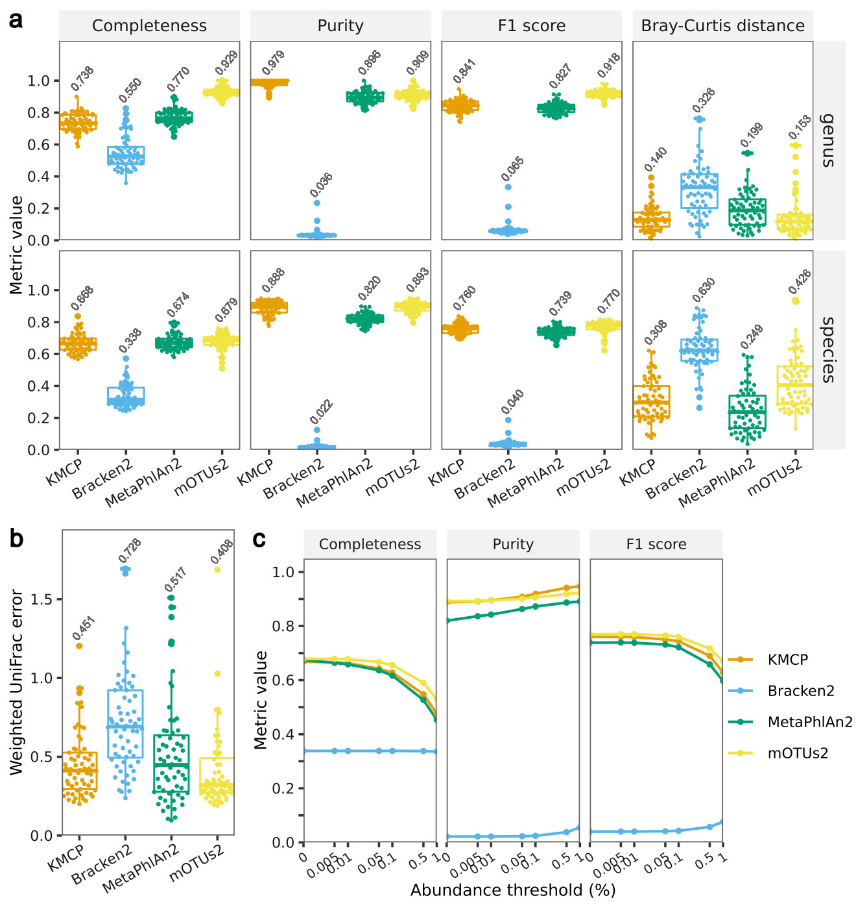
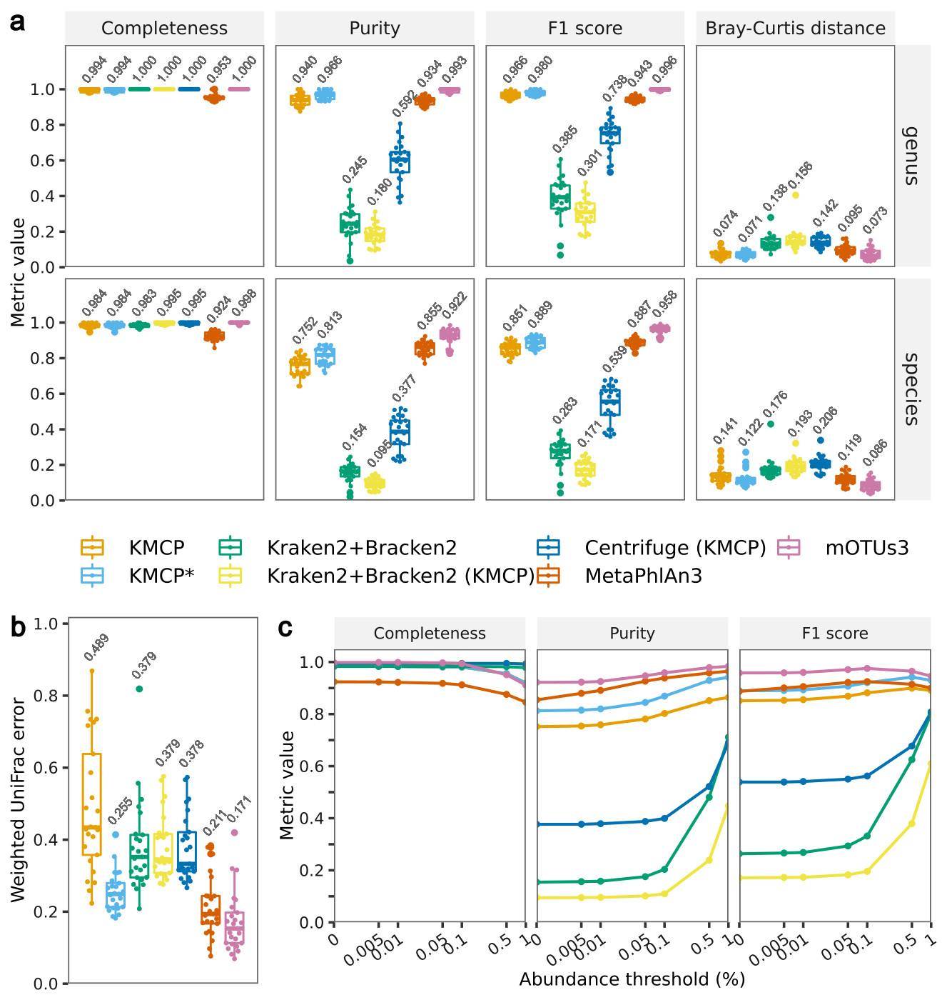
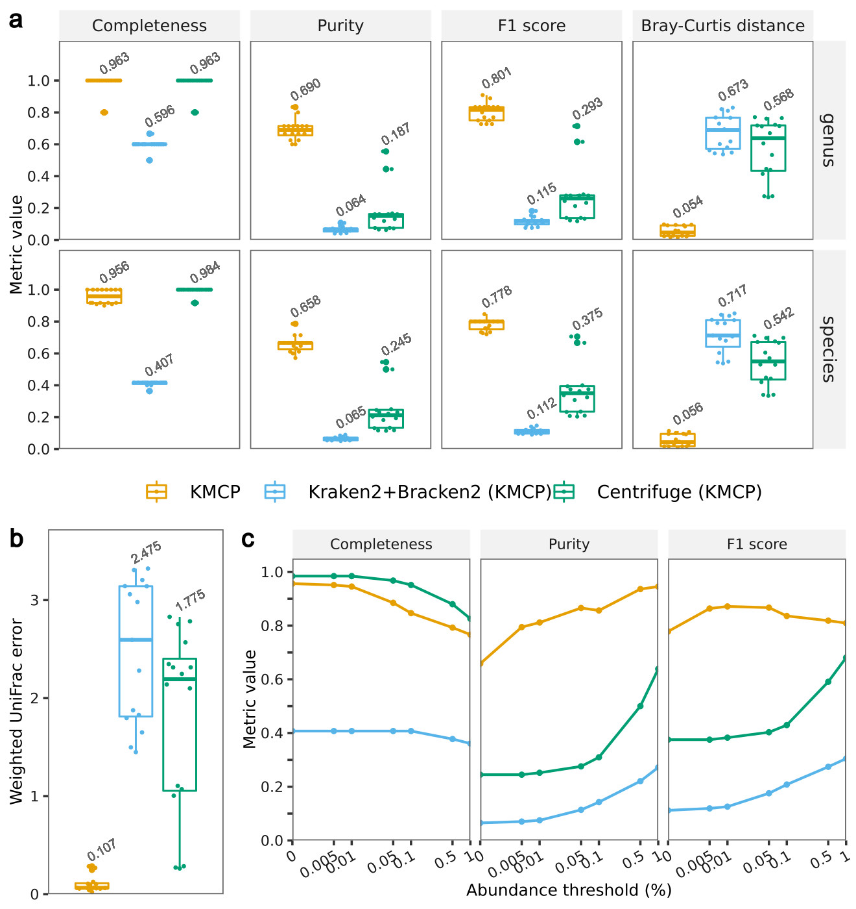
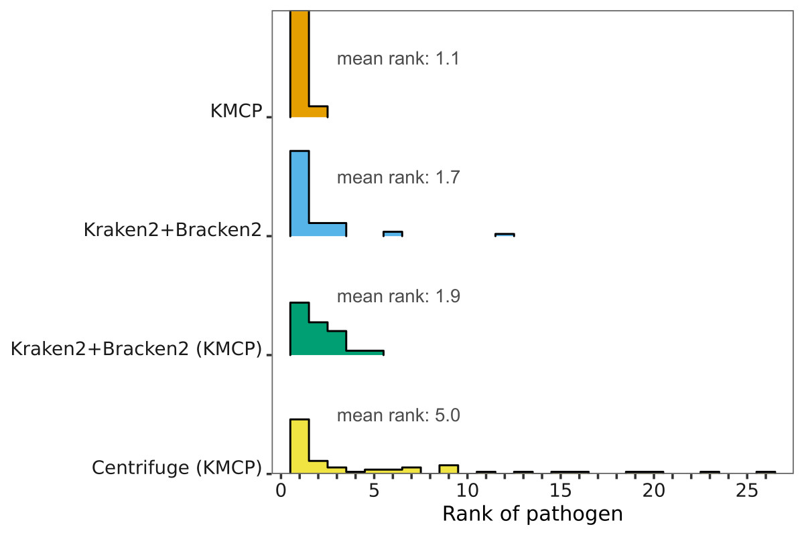
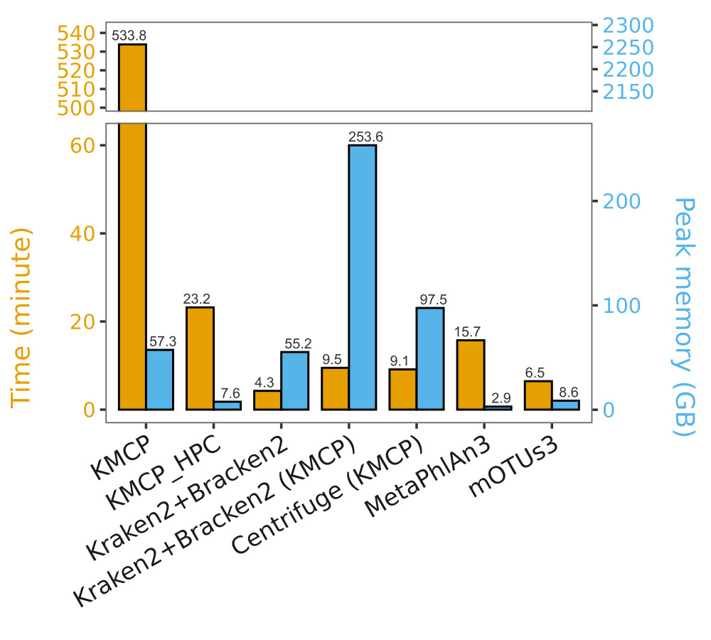

Taxonomic profiling
Benchmark
64 simulated mouse gut short-read datasets from CAMI2 challenge (prokaryotes)
Software, databases and commands details.
Softwares:
- mOTUs 2.5.1
- MetaPHlAn 2.9.21
- Bracken 2.5
- KMCP v0.7.0
Databases: RefSeq and Taxonomy snapshot provided by CAMI2 (2019-01-08)

25 simulated prokaryotic communities from Sun et al (prokaryotes)
Software, databases and commands details.
Softwares:
- KMCP (v0.7.0)
- mOTUs 3.0.1 (Jul 28, 2021)
- MetaPhlAn 3.0.13 (27 Jul, 2021)
- Kraken v2.1.2, Bracken v2.6.2
- Centrifuge v1.0.4
Databases and taxonomy version:
- KMCP, GTDB-RS202 (2021-04-27) + Genbank-viral (r246, 2021-12-06) + Refseq-fungi (r208, 2021-09-30), 2021-12-06
- Centrifuge, built with the genomes same to KMCP.
- mOTUs, 3.0.1 (2021-06-28), 2019-01
- MetaPhlAn, mpa_v30_CHOCOPhlAn_201901 (?), 2019-01
- Kraken, PlusPF (2021-05-17), 2021-05-17
In this benchmark, we generate metagenomic profiles with the same NCBI Taxonomy version 2021-12-06, including the gold-standard profiles.

Where KMCP* does not search against viral database.
16 mock virome communities from Roux et al (viruses/phages)
Software, databases and commands details.
Softwares:
- KMCP v0.7.0
- MetaPhlAn 3.0.13 (27 Jul, 2021)
- Kraken v2.1.2, Bracken v2.6.2
- Centrifuge v1.0.4
Databases and taxonomy version:
- KMCP, GTDB-RS202 (2021-04-27) + Genbank-viral (r246, 2021-12-06) + Refseq-fungi (r208, 2021-09-30), 2021-12-06
- Centrifuge, built with the genomes same to KMCP.
- MetaPhlAn, mpa_v30_CHOCOPhlAn_201901 (?), 2019-01
- Kraken, PlusPF (2021-05-17), 2021-05-17
In this benchmark, we generate metagenomic profiles with the same NCBI Taxonomy version 2021-12-06, including the gold-standard profiles.
Rankings

87 metagenomic samples of infected body fluids (bacteria pathogens, low coverage)
Software, databases and commands details.
Softwares:
- KMCP v0.7.0
- MetaPhlAn 3.0.13 (27 Jul, 2021)
- Kraken v2.1.2, Bracken v2.6.2
- Centrifuge v1.0.4
Databases and taxonomy version:
- KMCP, GTDB-RS202 (2021-04-27) + Genbank-viral (r246, 2021-12-06) + Refseq-fungi (r208, 2021-09-30), 2021-12-06
- Centrifuge, built with the genomes same to KMCP.
- MetaPhlAn, mpa_v30_CHOCOPhlAn_201901 (?), 2019-01
- Kraken, PlusPF (2021-05-17), 2021-05-17
In this benchmark, we generate metagenomic profiles with the same NCBI Taxonomy version 2021-12-06, including the gold-standard profiles.
| sensitivity | specificity | |
|---|---|---|
| KMCP | 81.43% | 100.00% |
| Kraken2+Bracken2 | 80.00% | 81.82% |
| Kraken2+Braken2 (KMCP) | 87.14% | 100.00% |
| Centrifuge (KMCP) | 87.14% | 72.73% |

Analysis time and storage requirement
| Database size (GB) | Building time | Building memory (GB) | |
|---|---|---|---|
| KMCP | 66 | 21 m | 14 |
| Kraken2 | 300 | 5 h 23 m | 255 |
| Bracken2 | 4 | 4 h 45 m | 258 |
| Centrifuge | 97 | 44 h 35m | 522 |
| MetaPhlAn3 | 3 | / | / |
| mOTUs3 | 8 | / | / |
